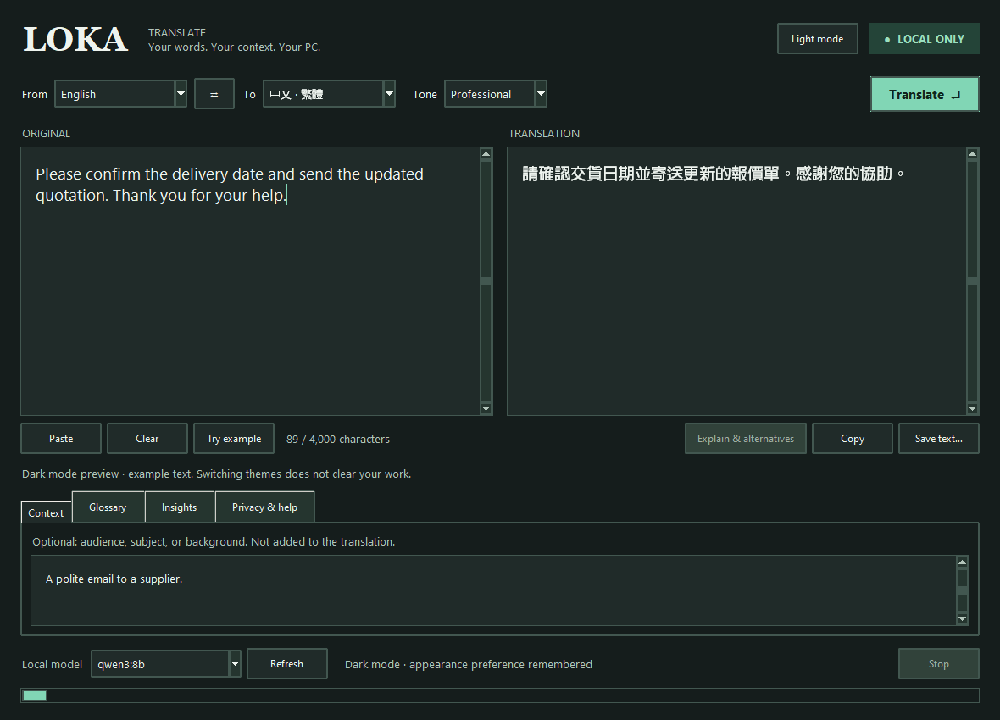

Your words.
Your context. Your PC.
A translation desk that understands the brief—not just the sentence. Add context, choose a tone, and guide terminology with your own local language model.
English · 简体中文 · 繁體中文 · Bahasa Indonesia
Version 1.1.0 · Windows 10/11 x64 · Requires local Ollama and a downloaded model.
This page is a download page, not a browser translator. No paid translation API.

New in 1.1.0: Light/dark appearance with a top-right toggle. Text, tabs and dropdowns switch together without clearing your work. Only the appearance preference is remembered locally. Dark mode shown above with example text; Windows dialogs follow your system settings.
Translate with intent
Five tone choices, optional background context and per-session terminology guidance. Stream the translation, then request alternative phrasings and English notes.
Chinese, deliberately
Separate Simplified and Traditional targets. OpenCC normalizes the script locally; Traditional uses Taiwan vocabulary.
Local by design
Inference uses loopback-only Ollama. No cloud fallback, API key, telemetry or saved translation history. Copy and export only when you choose.
Start translating
- Have Ollama installed and running, with a downloaded local model. The recommended model is qwen3:8b.
- Download and extract the Windows ZIP to a folder you will keep. Open LokaTranslate.exe.
- Pick your languages and paste text. Add context or a glossary if helpful. Click Translate, or press Ctrl+Enter.
- For quick access, create a desktop shortcut and pin the running app's taskbar icon.
Software/model setup needs internet. Translation works offline once the model is present. The first request loads the model; CPU-only translation can be slow. No model downloads happen automatically.
The executable is unsigned. Verify the SHA-256 below and inspect the source rather than disabling Windows security protections.
ZIP SHA-256: 21108f1c01d2a78f1428ddac9319d324ead7be1d79f3cdd49ce8617d974f78f3